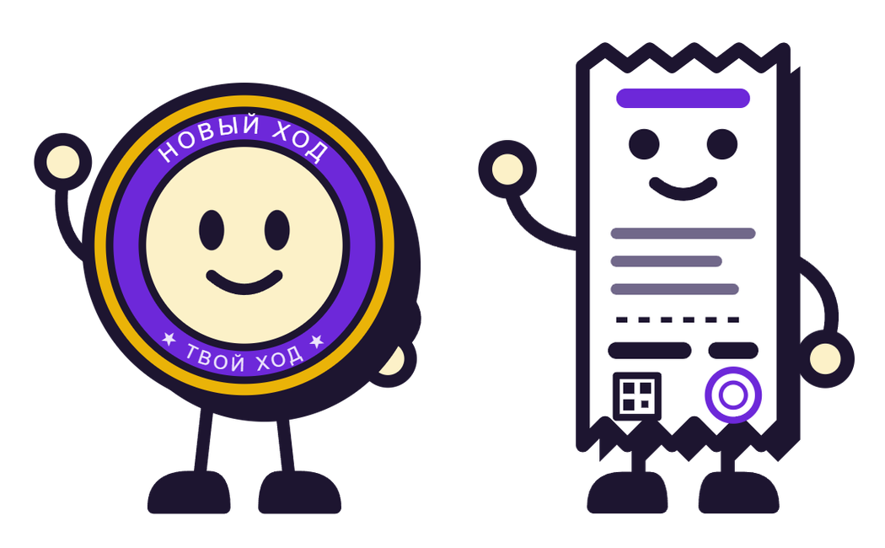
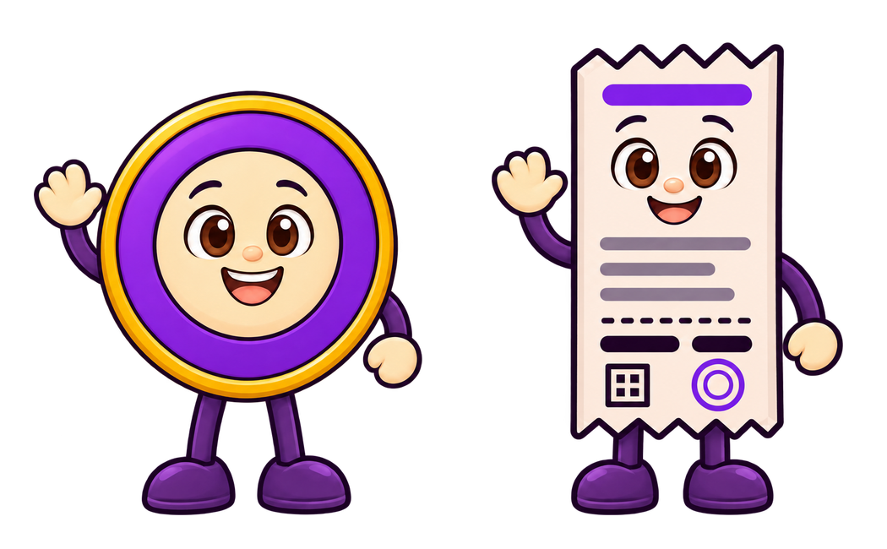
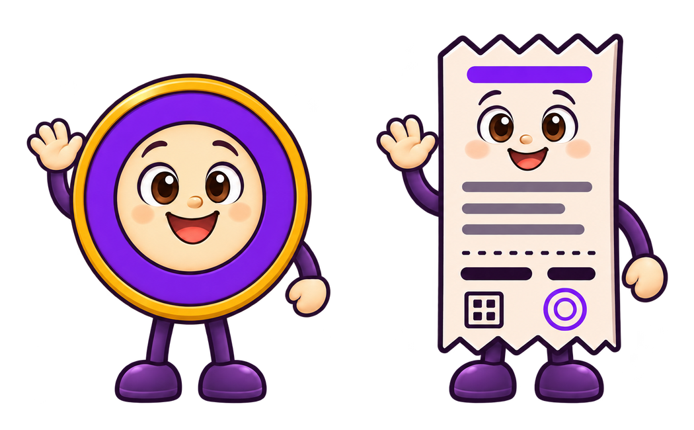
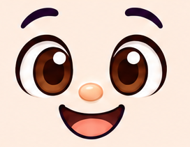

Монетка
Реагирует на то, что происходит в игре.
МонеткаНовый ход начался. Давай посмотрим, что изменилось.
Без номинала и счётчика. В маленьком размере — только лицо и обод.
Главные маскоты / Продолжаем мягкую графику
Тот же характер и знакомые роли — в графике, которая уже связала героев и их напарников.
01 / Сравнение рисунка
Два исполнения внутри «Мягкого объёма»
Монетка и оторванный чек

Сдержанный свет, ясные формы

Больше света и округлости

02 / Проверка в интерфейсе
Реагирует на то, что происходит в игре.
МонеткаНовый ход начался. Давай посмотрим, что изменилось.
Без номинала и счётчика. В маленьком размере — только лицо и обод.
Показывает результат и помогает сверить строки.

Все изменения — в одном чеке
Условные суммы. Лицо — часть бумаги; строки и итог остаются текстом.
03 / Эмоции и позы на основе A
Состояния перенесены в MQX
Что сохраняем
Монетка остаётся монетой, Квитя — оторванным чеком. Свет помогает почувствовать материал и не мешает читать лицо.